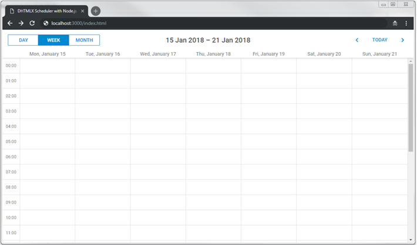
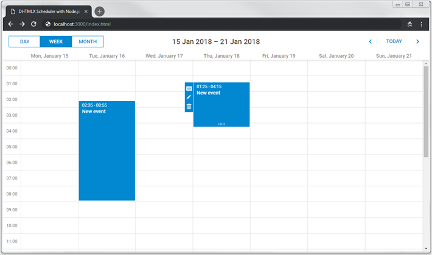

The current tutorial is intended for creating Scheduler with Node.js and REST API on the server side. If you use some other technology, check the list of available integration variants below:
Our implementation of Scheduler with Node.js will be based on REST API that will be used for communication with server. Node.js has a set of ready-made solutions, so we won't have to code everything from the very beginning.
This tutorial uses the Express framework and MySQL as a data storage.
The complete source code is available on GitHub.
To begin with, create a new application using yarn:
$ mkdir scheduler-howto-nodejs
$ cd ./scheduler-howto-nodejs
$ yarn init
There is a set of simple questions you need to answer during initialization of a new app:
$ question name (scheduler-howto-nodejs):
$ question version (1.0.0):
$ question description: My scheduler backend
$ question entry point (index.js): server.js
$ question repository url:
$ question author: Me
$ question license (MIT): MIT
$ question private:
$ success Saved package.json
The package manager will create a package.json file that will look similar to this:
{
"name": "scheduler-backend",
"version": "1.0.0",
"main": "index.js",
"author": "Me",
"license": "MIT",
}
As it was said at the beginning, the Express framework and MySQL are used for creating the demo.
You should setup your MySQL server, or use some service, e.g. Free MySQL Hosting.
Add express, mysql, body-parser and date-format-lite modules:
$ yarn add express mysql body-parser date-format-lite
server.js has been specified as the entry point above. Now you should create this file with the code below:
server.js
const express = require("express"); // use Express
const bodyParser = require("body-parser"); // for parsing POST requests
const app = express(); // create application
const port = 3000; // port for listening
// It's necessary for parsing POST requests
// the line below is used for parsing application/x-www-form-urlencoded
app.use(bodyParser.urlencoded({extended:true}));
// start server
app.listen(port, () => {
console.log("Server is running on port " + port + "...");
});
Then open the package.json file, and add the "scripts" section:
"scripts": {
"start": "node index.js"
}
After that package.json looks like this:
{
"name": "scheduler-backend",
"version": "1.0.0",
"main": "index.js",
"author": "Me",
"license": "MIT",
"scripts": {
"start": "node index.js"
},
"dependencies": {
"body-parser": "^1.18.3",
"date-format-lite": "^17.7.0",
"express": "^4.16.4",
"mysql": "^2.16.0"
}
}
Now you can start the server:
$ yarn start
or
$ npm start
Create a directory to place your front-end HTML/CSS/JS files:
$ mkdir ./public
Then create an index.html file in the public directory:
public/index.html
<!doctype html>
<html>
<head>
<title>DHTMLX Sсheduler example</title>
<meta charset="utf-8">
<!-- scheduler -->
<script src="https://cdn.dhtmlx.com/scheduler/edge/dhtmlxscheduler.js"
charset="utf-8"></script>
<link href="https://cdn.dhtmlx.com/scheduler/edge/dhtmlxscheduler_material.css"
rel="stylesheet" type="text/css" charset="utf-8">
<style> html, body{
margin:0px;
padding:0px;
height:100%;
overflow:hidden;
}
</style>
</head>
<body>
<div id="scheduler_here" class="dhx_cal_container"
style='width:100%; height:100%;'>
<div class="dhx_cal_navline">
<div class="dhx_cal_prev_button"> </div>
<div class="dhx_cal_next_button"> </div>
<div class="dhx_cal_today_button"></div>
<div class="dhx_cal_date"></div>
<div class="dhx_cal_tab" name="day_tab"></div>
<div class="dhx_cal_tab" name="week_tab"></div>
<div class="dhx_cal_tab" name="month_tab"></div>
</div>
<div class="dhx_cal_header"></div>
<div class="dhx_cal_data"></div>
</div>
<script> // set format of dates in the data source
scheduler.config.xml_date="%Y-%m-%d %H:%i";
scheduler.init('scheduler_here', new Date(2018,0,20), "month");
scheduler.load("http://localhost:3000/data", "json");
var dp = new dataProcessor("http://localhost:3000/data");
// use RESTful API on the backend
dp.setTransactionMode("REST");
dp.init(scheduler);
</script>
</body>
</html>
The above code defines a simple HTML layout, adds sources of dhtmlxScheduler from CDN and initializes scheduler using the init method. Note that 100% height is specified for the document body and for the scheduler container. Scheduler will use the size of its container, so some initial sizes are required.
After you have added a new page, you need to make it accessible from a browser. For this tutorial, scheduler will be the default page of an app.
Add the code below to server.js before "app.listen(...);":
server.js
// return static pages from the "./public" directory
app.use(express.static(__dirname + "/public"));
Run the app again to make sure it did the trick.
Now when you open the URL http://localhost:3000/ in a browser, you should see the index.html page.

So, you've got an empty scheduler. Let's connect it to the database and define methods to read and write events to it.
First things first, we need a database to work with. You can create a database with your favorite mysql-client, or via the console.
To create a database with a mysql-client, open it and execute the code below:
CREATE DATABASE IF NOT EXISTS `scheduler`;
USE `scheduler`;
DROP TABLE IF EXISTS `events`;
CREATE TABLE `events` (
`id` bigint(20) unsigned AUTO_INCREMENT,
`start_date` datetime NOT NULL,
`end_date` datetime NOT NULL,
`text` varchar(255) DEFAULT NULL,
PRIMARY KEY (`id`)
) DEFAULT CHARSET=utf8;
To import with a mysql-console, create a dump.sql file with the code above. And execute command in the shell:
$ mysql -uuser -ppass scheduler < dump.sql
Let's define MySQL connection settings in a constant in server.js. They will be used later in the storage.
server.js
// MySQL will be used for db access and util to promisify queries
const util = require("util");
const mysql = require('mysql');
// use your own parameters for database
const mysqlConfig = {
"connectionLimit": 10,
"host": "localhost",
"user": "root",
"password": "",
"database": "scheduler_howto_node"
};
When it's done, you can connect to this database from the app as follows:
server.js
// open connection to mysql
const connectionPool = mysql.createPool(mysqlConfig);
connectionPool.query = util.promisify(connectionPool.query);
Here connection pooling is used and queries are wrapped into Promises. It's not strictly necessary for our app to work, but it will definitely look good later on.
At the next step all the database access will be put into a separate class called Storage. It'll handle database connection and all CRUD actions.
All the read/write logic will be defined in a separate module Storage. It'll take mysql connection and perform simple CRUD to the specified table: read all the events,
insert new events, update or delete the existing ones.
For this, create the file storage.js and add the code below into it:
storage.js
require("date-format-lite"); // add date format
class Storage {
constructor(connection, table) {
this._db = connection;
this.table = "events";
}
// get events from the table, use dynamic loading if parameters sent
async getAll(params) {
let query = "SELECT * FROM ??";
let queryParams = [
this.table
];
let result = await this._db.query(query, queryParams);
result.forEach((entry) => {
// format date and time
entry.start_date = entry.start_date.format("YYYY-MM-DD hh:mm");
entry.end_date = entry.end_date.format("YYYY-MM-DD hh:mm");
});
return result;
}
// create new event
async insert(data) {
let result = await this._db.query(
"INSERT INTO ?? (`start_date`, `end_date`, `text`) VALUES (?,?,?)",
[this.table, data.start_date, data.end_date, data.text]);
return {
action: "inserted",
tid: result.insertId
}
}
// update event
async update(id, data) {
await this._db.query(
"UPDATE ?? SET `start_date` = ?, `end_date` = ?, `text` = ? WHERE id = ?",
[this.table, data.start_date, data.end_date, data.text, id]);
return {
action: "updated"
}
}
// delete event
async delete(id) {
await this._db.query(
"DELETE FROM ?? WHERE `id`=? ;",
[this.table, id]);
return {
action: "deleted"
}
}
}
module.exports = Storage;
Then you need to set up routes, so the storage could be accessed by the scheduler you have placed on the page.
For this, create another helper module and call it router:
router.js
function callMethod (method) {
return async (req, res) => {
let result;
try {
result = await method(req, res);
} catch (e) {
result = {
action: "error",
message: e.message
}
}
res.send(result);
}
};
module.exports = {
setRoutes (app, prefix, storage) {
app.get(`${prefix}`, callMethod((req) => {
return storage.getAll(req.query);
}));
app.post(`${prefix}`, callMethod((req) => {
return storage.insert(req.body);
}));
app.put(`${prefix}/:id`, callMethod((req) => {
return storage.update(req.params.id, req.body);
}));
app.delete(`${prefix}/:id`, callMethod((req) => {
return storage.delete(req.params.id);
}));
}
};
All it does is sets up the application to listen request URLs that scheduler can send and calls the appropriate methods of the storage.
Note, that all methods are wrapped into try-catch blocks, for you to be able to capture any error and return an appropriate error response to the
client. Check more info on error handling.
Also note that the exception message is written directly to the API response. It's pretty handy during the development, but in the production environment it can be a good idea to hide these messages from the client side, since raw mysql exceptions that get there may contain sensitive data.
Finally, when all parts are done you can connect Storage to the application via Router:
server.js
const router = require("./router");
// open connection to mysql
const connectionPool = mysql.createPool(mysqlConfig);
connectionPool.query = util.promisify(connectionPool.query);
// add listeners to basic CRUD requests
const Storage = require("./storage");
const storage = new Storage(connectionPool);
router.setRoutes(app, "/events", storage);
If you restart the application now, you should be able to create delete and modify events in scheduler, all changes will be there after you reload the page.

Currently scheduler loads all records from the events table on startup. It can work well if you know that the amount of data will remain small over time. But when scheduler is used for something like a planning/booking application and you don't delete or move obsolete records to another table, the amounts of data will build up fairly quickly and in a couple of month of active usage you may find that your app requests a couple of MBs of events each time a user loads the page.
It can easily be avoided by using dynamic loading. Scheduler will add the displayed dates to the request parameters and you'll be able to return only the records that need to be displayed. Each time the user switches to a new data range, scheduler will request a new portion of data.
To enable dynamic loading in UI, you can set the setLoadMode option to any of the values: "day", "week", "month". For any practical reasons, "day" should work well.
Firstly, enable dynamic loading on the client using the setLoadMode method:
public/index.html
scheduler.config.xml_date="%Y-%m-%d %H:%i";
scheduler.init("scheduler_here", new Date(2018, 0, 20), "week");
scheduler.setLoadMode("day");
// load data from the backend
scheduler.load("/events", "json");
Scheduler will sent from and to parameters in the request query, so you can add a simple WHERE clause in order to load only the requested range:
storage.js
async getAll(params) {
let query = "SELECT * FROM ??";
let queryParams = [
this.table
];
if (params.from && params.to) { query += " WHERE `end_date` >= ? AND `start_date` < ?";
queryParams.push(params.from);
queryParams.push(params.to);
}
let result = await this._db.query(query, queryParams);
result.forEach((entry) => {
// format date and time
entry.start_date = entry.start_date.format("YYYY-MM-DD hh:mm");
entry.end_date = entry.end_date.format("YYYY-MM-DD hh:mm");
});
return result;
}
In order to enable recurring events (e.g. "repeat event daily") you'll need to implement a couple of extra steps.
Add an appropriate extension to the scheduler page:
public/index.html
<!-- scheduler recurring tasks extension -->
<script src="https://cdn.dhtmlx.com/scheduler/edge/ext/dhtmlxscheduler_recurring.js"></script>
After that you need to update the model. It needs three additional fields:
You can add these columns to the existing events table with the following query:
ALTER TABLE `events` ADD COLUMN `event_pid` bigint(20) unsigned DEFAULT '0';
ALTER TABLE `events` ADD COLUMN `event_length` bigint(20) unsigned DEFAULT '0';
ALTER TABLE `events` ADD COLUMN `rec_type` varchar(25) DEFAULT '""';
Or create a table from scratch:
CREATE TABLE `events` (
`id` bigint(20) unsigned AUTO_INCREMENT,
`start_date` datetime NOT NULL,
`end_date` datetime NOT NULL,
`text` varchar(255) DEFAULT NULL,
`event_pid` bigint(20) unsigned DEFAULT '0',
`event_length` bigint(20) unsigned DEFAULT '0',
`rec_type` varchar(25) DEFAULT '""',
PRIMARY KEY (`id`)
) DEFAULT CHARSET=utf8;
Finally, you'll need to update the storage.
Firstly, let's take a look at the insert method. Here you need to update the SQL query in order to add new columns.
Secondly, you should process a special case for recurring events - deletion of a specific occurrence of the recurring series requires creating a new database record and the client will call the insert action for it:
storage.js
// create a new event
async insert(data) {
let sql = "INSERT INTO ?? " +
"(`start_date`, `end_date`, `text`, `event_pid`, `event_length`, `rec_type`) " + "VALUES (?, ?, ?, ?, ?, ?)";
const result = await this._db.query(
sql,
[
this.table,
data.start_date,
data.end_date,
data.text,
data.event_pid || 0, //!
data.event_length || 0, //!
data.rec_type //!
]);
// delete a single occurrence from a recurring series
let action = "inserted"; if (data.rec_type == "none") { action = "deleted"; }
return {
action: action,
tid: result.insertId
};
}
The update action requires the same changes in the SQL query.
Additionally, we need to handle a different special case there: when a recurring series is modified, you need to delete all the modified occurrences of that series:
storage.js
// update an event
async update(id, data) {
if (data.rec_type && data.rec_type != "none") { //all modified occurrences must be deleted when you update a recurring series
//https://docs.dhtmlx.com/scheduler/server_integration.html#recurringevents
await this._db.query(
"DELETE FROM ?? WHERE `event_pid`= ?;",
[this.table, id]);
}
await this._db.query(
"UPDATE ?? SET " +
"`start_date` = ?, `end_date` = ?, `text` = ?, " +
"`event_pid` = ?, `event_length`= ?, `rec_type` = ? "+ "WHERE id = ?",
[
this.table,
data.start_date,
data.end_date,
data.text,
data.event_pid || 0, data.event_length || 0, data.rec_type, id
]);
return {
action: "updated"
};
}
Finally, let's update the delete action. Here you have to check two special cases:
event_pid, it means a user deletes a modified instance of the recurring series. Instead of deleting such a record from the database,
you need to give it rec_type='none', in order for scheduler to skip this occurrence.storage.js
// delete an event
async delete(id) {
// some logic specific to the recurring events support
// https://docs.dhtmlx.com/scheduler/server_integration.html#recurringevents
let event = await this._db.query(
"SELECT * FROM ?? WHERE id=? LIMIT 1;",
[this.table, id]);
if (event.event_pid) {
// deleting modified occurrence from a recurring series
// If an event with the event_pid value was deleted,
// it should be updated with "rec_type==none" instead of deleting.
event.rec_type = "none";
return await this.update(id, event);
}
if (event.rec_type && event.rec_type != "none") {
// if a recurring series deleted, delete all modified occurrences of the series
await this._db.query(
"DELETE FROM ?? WHERE `event_pid`=? ;",
[this.table, id]);
}
await this._db.query(
"DELETE FROM ?? WHERE `id`= ?;",
[this.table, id]);
return {
action: "deleted"
}
}
dhtmlxScheduler is a client-side component that doesn't have built-in security safeguards for the sake of flexibility. Moreover, the client side only is not able to provide reliable security measures.
It means that the application security is in the responsibility of a backend developer. The most obvious aspects to pay attention to are the following:
SQL injections. All operations done in this example use parameterized SQL queries which should be safe in terms of SQL injections.
XSS attacks. The client side doesn't sanitize neither user input before sending it to the backend, nor server data before displaying it on a page.
A simple measure against the latter is using the helmet module, which will add basic checks for various risks.
The helmet module can be installed as in:
$ yarn install helmet
Then add the following string to server.js before app.listen(...):
server.js
const helmet = require("helmet");
app.use(helmet());
Due to our router implementation, the backend API returns an error status in case of a captured exception.
You can process these errors on the client side using the onAfterUpdate event of the dataProcessor module:
public/index.html
dp.attachEvent("onAfterUpdate", function(id, action, tid, response){
if (action == "error") {
// do something here
alert("Server error: " + response.message);
}
});
In case you've completed the above steps to implement Scheduler integration with Node.js, but Scheduler doesn't render events on a page, have a look at the Troubleshooting Backend Integration Issues article. It describes the ways of identifying the roots of the problems.
Now you have a fully functioning Scheduler. You can view the full code on GitHub, clone or download it and use it for your projects.
You can also check guides on the numerous features of Scheduler or tutorials on integration of Scheduler with other backend frameworks.
Back to top